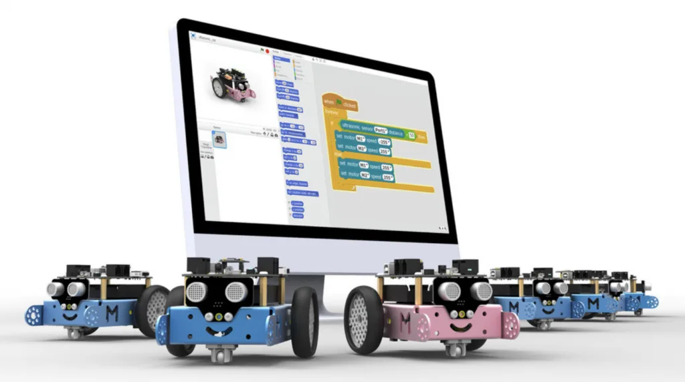

China Robotics Market Size 2026: The Data Behind the World's #1 Robot Market
Total market, cloud robotics, clean-room robots and the official MIIT numbers.
No country buys educational robots like China. Policy puts coding and robotics into K-12 classrooms, after-school chains add recurring demand, and the hardware is made domestically. Here is the market in numbers — and who is selling into it.

Educational robots are the most policy-sensitive corner of China's robotics market: when Beijing decides classrooms should teach robots, the market follows. That is exactly what has happened since the State Council's 2017 AI plan, and why IDC tracks the segment separately.
IDC data, compiled with 观研天下, show China's educational-robot hardware sales reached RMB 1.07 billion in H1 2025, up 12.5% year-on-year, and forecast the market to reach RMB 3.93 billion by 2029 as classroom penetration deepens across more provinces. Verified Market Reports sizes China's early-childhood education robot segment at $0.40 billion in 2024, growing to $0.45 billion in 2025 and $1.20 billion by 2033 (~13.8% CAGR). In the software layer — curricula, coding platforms, AI teaching aids — Global Growth Insights gives China $0.18 billion, about 30% of the global education-robot software market, growing at 24%, the fastest of the major markets.
| Metric | Value | Source |
|---|---|---|
| Hardware sales, H1 2025 | RMB 1.07B (+12.5% YoY) | IDC |
| Hardware sales, 2029 forecast | RMB 3.93B | IDC |
| Early-childhood segment | $0.40B (2024) → $1.20B (2033) | Verified Market Reports |
| Software segment (China share) | $0.18B · 30% of global · 24% CAGR | Global Growth Insights |
| Global context | $2.07B (2026) → $4.11B (2031), 14.7% CAGR | Mordor Intelligence |
The demand is not organic — it is engineered, in layers:
| Company | Education line | Positioning |
|---|---|---|
| UBTECH (优必选) | uKit, Alpha mini, Jimu | Humanoid-adjacent education robots + AI classes |
| Makeblock (童心制物) | mBot, mTiny, Codey Rocky | Modular kits for K-12, global export leader |
| Dobot (越疆) | Magician, Nova | Desk-top robot arms for higher-ed and vocational schools |
| Abilix (能力风暴) | Evolution series | Competition robotics pioneer, 20+ years in schools |
Makeblock is the strongest export brand (its mBot is used in schools across the US and Europe), while UBTECH bundles its education line with the humanoid story that dominates Chinese headlines. Dobot's arms are the standard for China's vocational-education robotics track, and Abilix remains the competition-culture veteran.
China is the largest hardware producer and the biggest single-country software market for educational robots — policy-driven scale no other market can match. Japan leads in high-end humanoid research kits (SoftBank's Pepper legacy, and research platforms), and the US leads in software and coding curricula (LEGO SPIKE, Wonder Workshop, VEX), but neither has the K-12 policy mandate China does. The trade pattern reflects this: China exports hardware kits at scale (Asia-Pacific held 41.2% of global educational-robot demand in 2025, per Emergen Research), while importing premium curricula and platforms.
IDC: RMB 1.07 billion hardware sales in H1 2025 (+12.5% YoY), projected to reach RMB 3.93 billion by 2029. Verified Market Reports sizes the early-childhood segment at $0.40B (2024) → $1.20B (2033).
Government policy: the New Generation AI Development Plan pushes coding and robotics into K-12, quality-oriented-education reforms redirect tutoring budgets to STEM, and white-list robot competitions create recurring hardware demand.
UBTECH (education humanoids), Makeblock (modular K-12 kits), Dobot (desktop arms for vocational schools), Abilix (competition robotics), plus franchise chains like ROBOROBO.
China is the largest hardware producer and biggest single-country software market; Japan leads in research-grade humanoid kits; the US leads in coding curricula and platforms. China's edge is policy-mandated K-12 scale.
Total market, cloud robotics, clean-room robots and the official MIIT numbers.
From import dependence to 13 years as the world's largest market.
China's 140+ humanoid startups and the race to mass production.
Where the capital went in 2025–26 and which segments raised the most.
The service-robot segment where Chinese brands ship 85%+ of global volume.
Company profiles, product pages and supplier analysis for China's robotics ecosystem.